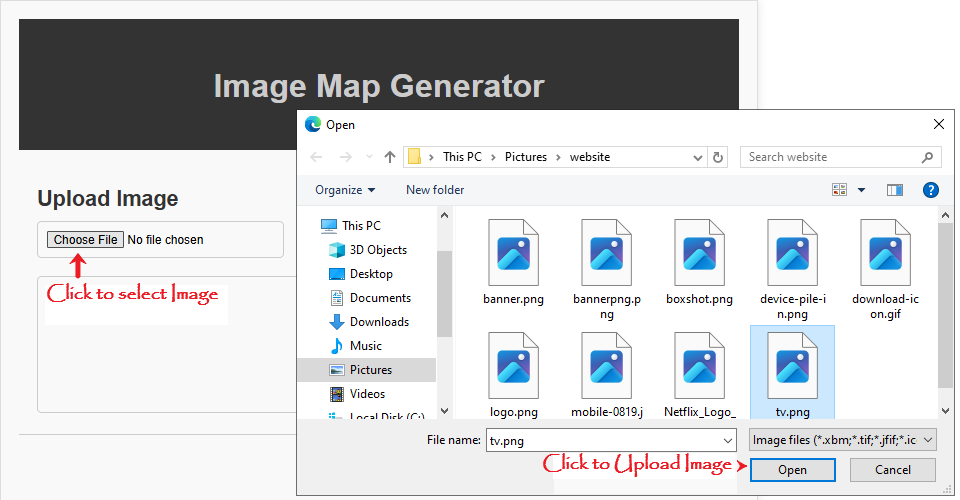

Image Map Generator
Upload Image
Draw Shapes
Generated Code
How to use ?


HTML <map> Element
The HTML <map> element is used to define an image map, which is a clickable area on an image that links to another webpage or performs a specific action.
Syntax:
<img src="image.jpg" alt="Image with clickable areas" usemap="#mapname">
<map name="mapname">
<area shape="rect" coords="x1,y1,x2,y2" href="link1.html" alt="Link 1">
<area shape="circle" coords="x,y,radius" href="link2.html" alt="Link 2">
<area shape="poly" coords="x1,y1,x2,y2,x3,y3,...,xn,yn" href="link3.html" alt="Link 3">
</map>Attributes:
name: Specifies the name of the map.area: Defines a clickable area within the image map.shape: Specifies the shape of the area (rect, circle, poly).coords: Specifies the coordinates of the area (x1,y1,x2,y2 for rectangles, x,y,radius for circles, x1,y1,x2,y2,x3,y3,...,xn,yn for polygons).href: Specifies the link URL for the area.alt: Specifies the alternative text for the area.
Benefits:
- Allows users to click on specific areas of an image to access different links or perform different actions.
- Enhances user experience by providing a more interactive and engaging way to navigate through content.
- Can be used to create interactive images, such as menus, diagrams, and infographics.
Common use cases:
- Creating interactive menus or navigation systems.
- Adding hotspots to images, such as diagrams or infographics.
- Creating interactive tutorials or guides.
- Enhancing accessibility by providing alternative text for image areas.
Browser support:
The HTML <map> element is supported by all modern browsers, including Chrome, Firefox, Safari, Edge, and Internet Explorer.
Tips and best practices:
- Use descriptive
alttext for each area to improve accessibility. - Use a consistent naming convention for your map and area elements.
- Test your image map in different browsers and devices to ensure compatibility.
- Consider using CSS to style your image map and make it more visually appealing.